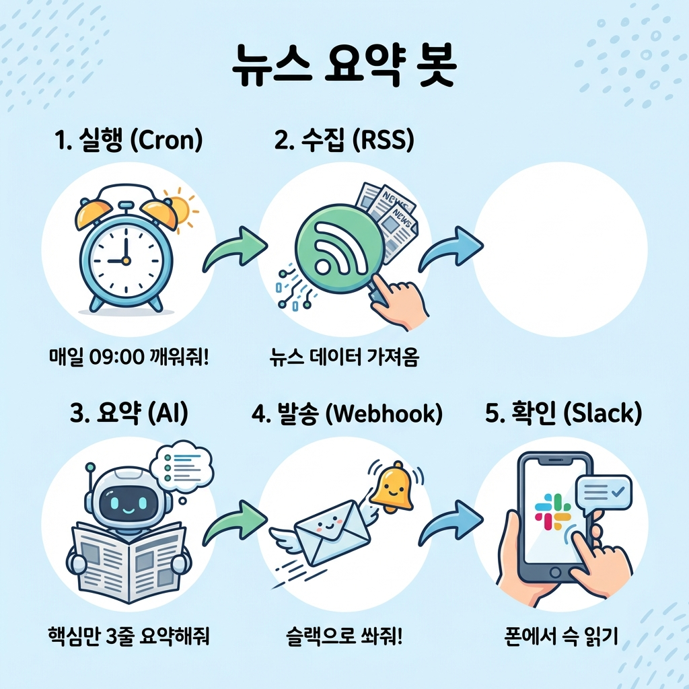
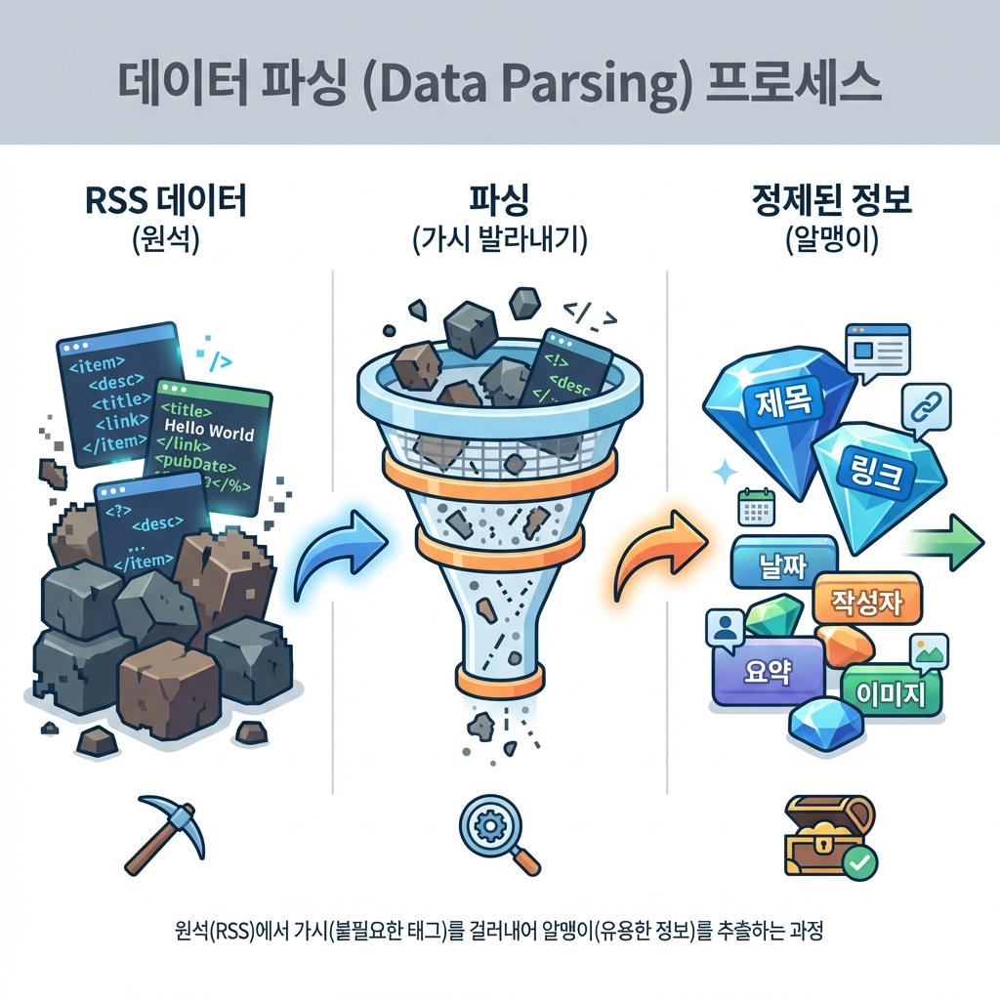
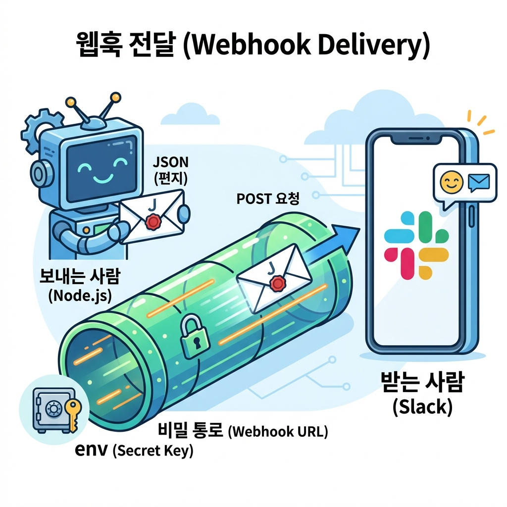

"AI한테 시키면 뭔가 나오긴 해요. 근데 거기서 끝이에요."
기능 하나 추가하려니까 꼬이고, 에러 나면 뭐가 문제인지 모르겠고,
결국 반쯤 만들다 포기하게 되죠?
처음엔 잘 되는데...
처음에 AI한테 시키면 뭔가 그럴듯한 게 나와요. "오, 진짜 되네?" 하고 신나요.
그래서 기능을 하나 더 추가해요. "여기에 로그인도 붙여줘"
그런데 갑자기 아까 되던 게 안 돼요. 에러가 줄줄 나와요. 어디를 고쳐야 하는지도 모르겠어요.
결국 "처음부터 다시 하자" → 3번째 반복하면... 포기.
이건 AI가 무능해서가 아니에요. 시키는 방법을 몰라서예요.
그런데 AI의 능력 자체는 놀라울 정도로 발전했어요. 문제는 그 능력을 끌어내는 방법이에요.
AI 코딩의 발전 과정
| 시기 | 수준 | 한계 |
|---|---|---|
| 2020년 이전 | "if문 예제 알려줘" → 코드 조각만 | 조립은 직접 |
| 2022년 (ChatGPT) | "로그인 기능 만들어줘" → 코드 덩어리 | 복붙/파일관리 직접 |
| 2024년~현재 (Claude Code) | "앱 만들어줘" → 프로젝트 전체 생성 | 지휘하는 법을 알아야 함 |
결국 차이는 "명령하는 사람"
그래서 바이브 코딩이 필요해요.
오늘의 흐름
바이브 코딩이란
"바이브"면 대충 느낌만 전달하면 되는 거 아니에요?
— 아닙니다. 여기서 오해하면 안 돼요.
정의
코드 한 줄 한 줄 짜는 게 아니라,
"이 버튼 누르면 이렇게 동작해야 해"라고 의도와 예상 결과를 구체적으로 지시하는 방식이에요.
바이브 코딩 ≠ 대충 말하기
"바이브"라는 단어 때문에 헷갈릴 수 있어요. "느낌만 전달하면 AI가 알아서 해주겠지?" — 이게 안 돼서 다들 막히는 거예요.
바이브 코딩의 진짜 의미:
- 코드 문법은 몰라도 돼요
- 대신 뭘 만들지, 왜 만들지, 어떻게 동작해야 하는지는 명확히 알아야 해요
- AI한테 기술적인 지침을 정확하게 전달하는 게 핵심이에요
MVP란?
MVP(Minimum Viable Product) = 최소 기능 제품. 핵심 기능만 있는 버전을 빨리 만들어서 반응을 보는 거예요. 바이브 코딩은 이 MVP를 빠르게 만드는 데 특히 강해요.
전통 코딩 vs 바이브 코딩
전통적인 코딩
- 사람이 직접 코드를 짠다
- 문법, 규칙을 외워야 한다
- 오류 하나에 몇 시간 고민
- 혼자 모든 걸 알아야 한다
바이브 코딩
- AI가 코드를 짜고, 사람이 방향을 잡는다
- 의도와 결과를 명확하게 지시한다
- AI한테 물어보면 바로 해결책 제시
- AI와 대화하면서 같이 만든다
전통 코딩: 벽돌을 직접 쌓는 것 vs 바이브 코딩: AI와 함께 설계하는 것
왜 지금 바이브 코딩이 가능해졌을까요? 2022년까지는 AI가 코드 조각만 줄 수 있었어요. 복붙과 조립은 직접 해야 했죠. 하지만 2024년부터 AI가 프로젝트 전체를 다룰 수 있게 됐어요. 파일 생성, 코드 작성, 에러 수정까지. 남은 건 "어떻게 시키느냐"뿐이에요.
같은 목표, 다른 접근
할일 관리 앱을 만든다고 하면:
전통 방식
- 언어 선택 → 문법 공부
- 프레임워크 학습
- 코드 작성 → 삽질...
- 6개월~1년
바이브 코딩
- AI에게 말하기
- 기획 대화 → 코드 생성
- 피드백 → 반복
- 대화할 줄 알면 시작
바이브 코딩으로 뭘 만들 수 있나요?
코딩 경험 없는 사람들이 실제로 바이브 코딩으로 만드는 것들이에요.
이 사람들이 코딩을 배웠을까요? 아니에요. AI와 대화하는 법을 배웠어요.
비개발자들이 만든 실제 사례
카드를 클릭하면 자세한 내용을 볼 수 있어요.
바이브 코딩의 한계
| 잘 되는 것 | 어려운 것 |
|---|---|
| 개인용/소규모 도구 | 수백만 명 동시 접속 서비스 |
| 프로토타입, MVP | 은행/병원급 보안 시스템 |
| 반복 업무 자동화 | 게임 엔진 같은 고성능 프로그램 |
| 간단한 웹/앱 | 기존 복잡한 시스템에 기능 추가 |
바이브 코딩의 핵심은 "대화"
한 번에 완성품이 나오지 않아요. 대화하면서 만들어가는 거예요.
바이브 코딩식 대화법 맛보기
이렇게 하면 실패
❌ "투두 앱 만들어줘"
→ AI: 뭔가 만들긴 하는데... 이게 내가 원하던 거야?
이렇게 하면 성공
✅ "할 일 관리 앱을 만들고 싶어. 어떤 기능들이 필요할지 같이 정리해볼까?"
→ AI: "네, 먼저 핵심 기능부터 정리해볼게요..."
"만들어줘"가 아니라 "같이 정리해보자"예요. AI와 대화하면서 기획이 잡히는 거예요.
바이브 코딩을 하다 보면
자동차를 직접 만들 줄 몰라도 운전은 할 수 있어요.
AI가 차를 만들어주지만, 운전은 여러분이 해요.
여러분은 방향(Direction)을, AI는 코드(Code)를 담당해요
AI의 유능한 상사 되기
"만들어줘" 한마디면 될 줄 알았는데...
왜 내가 원하는 게 안 나오죠?
몰라도 되는 것 vs 알아야 하는 것
| 몰라도 됨 | 알아야 함 |
|---|---|
| 프로그래밍 언어 문법 | 뭘 만들고 싶은지 (목적) |
| 복잡한 알고리즘 | 프로그램의 종류 (웹? 앱? 자동화?) |
| 코드를 직접 타이핑하는 것 | AI 결과를 확인하고 피드백하는 법 |
| function, const 같은 키워드 | "이건 로그인 기능이구나" 판독 능력 |
개념이 필요한 두 가지 이유
1. 명확한 지시
"알아서 해줘"가 아니라 구체적인 주문서가 돼요. 개념을 알아야 정확히 시킬 수 있어요.
2. AI 결과 판단
AI가 만들어준 결과물을 평가할 수 있어야 해요. "이게 맞는 건가?" 판단하려면 기본 개념이 필요해요.
알아야 할 핵심 개념 5가지
학습 순서
코드 "짜기" vs "보기"의 차이
바이브 코딩은 코드를 직접 쓰는 게 아니에요. 하지만 AI가 만든 코드를 읽고 판단하는 능력은 필요해요. 아래 예시를 볼게요.
function addTodo(text) {
const newTodo = {
id: Date.now(),
text: text,
done: false
};
todos.push(newTodo);
}
짜는 것 (몰라도 됨)
function,const같은 키워드Date.now()같은 함수 사용법todos.push()같은 배열 조작 문법
보는 것 (알아야 함)
- "할 일을 추가하는 기능이구나"
- "새 할 일에 id, 텍스트, 완료 여부가 들어가는구나"
- "목록에 추가하는 동작이구나"
짜는 건 AI가 해요. 보고 판단하는 건 여러분 몫이에요. "이 코드가 뭘 하는 건지" 흐름을 읽을 줄 알면 돼요.
전통 코딩 학습 vs 바이브 코딩 학습
전통 코딩 학습
"for문을 어떻게 쓰는지", "if문 다음에 뭐가 와야 하는지"
→ 문법 세부사항에 집중
바이브 코딩 학습
"이 데이터를 하나씩 처리해야 해", "여기서 에러 체크가 필요해"
→ 의도와 개념 이해에 집중
5단계 성장 경로
대화법 비교
Bad
"투두 앱 만들어줘"
→ AI가 뭔가 만들긴 하는데, 원하던 게 아님
Good
"할 일 관리 앱을 만들고 싶어. 어떤 기능들이 필요할지 같이 정리해볼까?"
→ 대화하면서 기획이 잡힘
기술적 지시가 가능한 매니저의 특징
실패 예시: 상품 검색/필터링
Bad
"상품 검색이랑 필터링 기능 만들어줘"
→ 가격순 정렬이 안 되고, 카테고리가 뒤죽박죽
Good
"상품 검색을 만들 건데. 1)이름 검색 2)카테고리별 필터 3)가격순/인기순 정렬. 먼저 정리해줘"
→ 구조부터 잡고, 하나씩 구현
3가지 마인드셋
유능한 신입사원한테 "알아서 해"라고 하면 엉뚱한 결과.
"이 고객 데이터를 이 기준으로 정리해줘"라고 하면 완벽한 결과.
도구 세팅: 4가지 무기
터미널이라고 하면 겁부터 나시죠? 까만 화면에 깜빡이는 커서...
근데 사실 카카오톡이랑 똑같아요.
4대 도구
Claude Code = "손발이 달린" 실무자 (파일을 직접 열어서 수정해요)
터미널 = 사람↔컴퓨터 대화창 (카카오톡처럼!)
Korean Language Pack 확장 설치 추천
GitHub = 클라우드 세이브
컴퓨터 고장나도 안전해요
.env = 비밀번호 금고 (API 키 보관)
node_modules = 재료 보관함 (Git에 안 올려요, 언제든 재설치)
설치 과정
터미널 열기
Claude Code를 설치하려면 먼저 터미널을 열어야 해요.
🍎 Mac
Command + Space → "Terminal" 검색 → 엔터
🪟 Windows
윈도우 키 → "PowerShell" 검색 → 엔터
Claude Code 설치 3단계
1단계: 설치 명령어 입력
npm install -g @anthropic-ai/claude-code
2단계: Claude Code 실행
claude
3단계: 로그인 — 브라우저가 자동으로 열려요. Claude 계정으로 로그인하면 승인 완료!
설치 확인: claude --version (버전 번호가 나오면 성공!)
트러블슈팅: npm: command not found 오류가 나오면? → Node.js LTS 버전을 먼저 설치하세요 (nodejs.org). Node.js를 설치하면 npm이 자동으로 함께 설치돼요.
GUI vs CLI 비교
GUI (마우스 방식)
폴더 우클릭 → "새 폴더" → 이름 입력
CLI (터미널 방식)
mkdir my-folder 한 줄이면 끝!
AI가 터미널 명령을 직접 실행할 수 있어요
첫 업무 지시 (대화 예시)
나: "현재 폴더에 있는 파일 목록 좀 보여줘"
Claude:ls명령어를 자동 실행하고 결과를 보여줘요
나: "여기에 hello.txt 파일 만들어줘. 내용은 '안녕하세요'로"
Claude: 파일을 직접 생성해요. 복붙할 필요 없어요!
명령어를 몰라도 AI가 알아서 처리해요. 터미널 명령어를 외울 필요 없어요. 한국어로 말하면 AI가 알아서 실행해요.
비유: 카카오톡(사람↔사람) vs 터미널(사람↔컴퓨터)
VS Code 설치 + 세팅
VS Code (Visual Studio Code) = 전 세계 개발자의 70% 이상이 사용하는 전문가용 작업 환경이에요.
설치 방법:
- VS Code 공식 홈페이지 접속
- 파란색 Download 버튼 클릭
- 설치 파일 실행 → "다음, 다음, 완료"
주요 기능 3가지:
- 자동 완성:
cl만 쳐도console.log를 추천해줘요 - 에러 표시: 문제 있는 코드 아래 빨간 줄이 나와요
- 터미널 내장: 별도 창 없이 VS Code 안에서 터미널을 쓸 수 있어요
필수 확장 프로그램: Korean Language Pack
- VS Code 왼쪽 사이드바에서 확장(Extensions) 아이콘 클릭
- 검색창에
Korean입력 - "Korean Language Pack for Visual Studio Code" → Install → Restart
code . # "현재 폴더를 VS Code로 열어"
code는 "VS Code를 실행해", .(점)은 "현재 폴더를 열어"라는 뜻이에요.
실습: 파일 만들고 저장하기
code .명령어로 VS Code 열기- 탐색기 빈 공간 우클릭 → "새 파일"
- 파일명 입력:
hello.txt - 내용 입력: "안녕하세요, 첫 파일이에요!"
Ctrl+S로 저장
팁: 파일명 옆에 동그라미(●)가 보이면 = 아직 저장 안 된 거예요. Ctrl+S 누르면 사라져요.
터미널 여는 법: VS Code 안에서 터미널이 안 보일 때 → 상단 메뉴 Terminal → New Terminal 또는 단축키 Ctrl + ` (백틱). 터미널은 VS Code 아래쪽에 나타나요.
Git 3단계 주문
첫 시작: git init — 이 폴더에서 세이브 기능을 켜는 것!
Initialized empty Git repository가 뜨면 성공이에요!
git add . # 담고 (점 . = "모든 파일 다 담아!") git commit -m "메시지" # 찍고 (세이브 포인트 찍기) git push # 밀고 (클라우드에 올리기)
RPG 비유: "보스를 잡기 전에 저장! 로그인 기능 건드릴 건데, 망치면 귀찮으니까 여기서 일단 저장!" → git commit -m "로그인 건드리기 전 세이브" → 마음의 평화. 망쳤으면? 세이브 포인트로 돌아가면 돼요.
이것만 알면 코드는 절대 날아가지 않아요.
GitHub 연결하기
GitHub = 클라우드 세이브. 내 컴퓨터가 고장나도 코드가 안전해요. GitHub에서 저장소를 만든 후, 이 3줄만 터미널에 붙여넣으면 연결 끝!
- GitHub.com 회원가입
+→New repository→ 이름 짓기 →Create repository- 아래 3줄을 터미널에 붙여넣기:
git remote add origin https://github.com/내아이디/내저장소.git git branch -M main git push -u origin main
이제 git push 한 번이면 내 코드가 클라우드에 저장돼요.
NPM + .env
NPM(Node Package Manager)은 프로젝트에 필요한 라이브러리를 관리하는 도구예요. "내 컴퓨터에서만 작동 안 함" 문제를 해결해줘요.
package.json = 레시피 파일. 프로젝트에 필요한 재료(라이브러리) 목록이에요.
{
"name": "my-project",
"dependencies": {
"rss-parser": "^3.13.0",
"axios": "^1.13.0"
}
}
npm install을 실행하면 package.json에 적힌 모든 라이브러리가 node_modules 폴더에 자동으로 설치돼요. 레시피만 있으면 누구든 같은 환경을 만들 수 있어요!
.gitignore 필수 2가지:
node_modules/ # 재료 보관함 (용량 크고, npm install로 재설치 가능) .env # 비밀번호 금고 (API 키 유출 위험!)
.env 사용법: API_KEY=abcdefg12345 형식으로 저장하고, 코드에서는 process.env.API_KEY로 가져와요. 비밀번호를 코드에 직접 쓰면 GitHub에 올릴 때 전 세계에 공개되는 거예요!
4대 도구 종합
| 도구 | 비유 | 역할 | 핵심 명령어 |
|---|---|---|---|
| Claude Code | 손발 달린 신입 | AI 코딩 실행 | claude |
| VS Code | 전문 주방 | 코드 편집 환경 | code . |
| Git | 게임 세이브 | 버전 관리 | git init → add → commit → push |
| NPM | 레시피북 | 의존성 관리 | npm install |
실전: 뉴스 요약 슬랙 봇 만들기
"매일 아침 뉴스 검색하는 데 30분... 1년이면 180시간이에요.
한 달치 업무 시간을 단순 반복에 버리고 있는 셈이에요."
지금부터 이 30분을 0분으로 만드는 비서를 만들어볼 거예요.
자동화할 수 있는 일 vs 없는 일
모든 일을 자동화할 수 있는 건 아니에요. 자동화가 잘 되는 일에는 3가지 공통점이 있어요.
| 자동화 가능 | 자동화 불가능 |
|---|---|
| 환율 수집, 뉴스 키워드 모으기 | "이 뉴스가 중요한가?" (판단) |
| 정해진 보고서 발송 | "트렌드에 맞나?" (감각) |
| 특정 키워드 기사 모으기 | "거래처 담당자 기분이 안 좋아 보이네" (눈치) |
"매일 아침 AI 뉴스 모아서 슬랙으로 받기" — 반복적이고, 규칙적이고, 데이터 처리예요. 자동화하기 딱 좋은 일이에요!
오늘 만들 것: 전체 구조
완성하면 이런 흐름으로 동작해요. 먼저 큰 그림을 보고, 하나씩 만들어볼게요.
깨워줘!

Cron(알람) → RSS(수집) → AI(요약) → Webhook(발송) → Slack(확인)
낯선 단어가 보여도 괜찮아요. 각 단계를 만들면서 자연스럽게 알게 될 거예요.
AI와 기획부터 시작하기
바이브 코딩의 첫 단계는 코드가 아니에요. AI와의 기획 대화예요. 어떻게 대화하는지 보여드릴게요.
1단계: 큰 그림 전달하기
나: "뉴스 검색 자동화하고 싶어. 매일 아침 9시에 'AI' 뉴스 모아서 슬랙으로 받고 싶어."
프롬프트 포인트: "뭘 하고 싶은지"(뉴스 자동화) + "언제"(매일 9시) + "어디로"(슬랙) — 구체적인 3요소를 한 문장에 담았어요.
AI: "GitHub Actions Cron(무료) + 구글 뉴스 RSS + 슬랙 Webhook 조합을 추천해요!"
2단계: 모르는 건 바로 물어보기
나: "GitHub Actions? RSS? Webhook? 그건 뭐야? 하나씩 쉽게 설명해줘."
프롬프트 포인트: 모르는 용어가 나왔을 때, 넘어가지 말고 바로 물어보세요. "쉽게 설명해줘"를 붙이면 비유로 설명해줘요.
AI: 쉽게 말하면 이래요:
• Cron = 알람 시계. "매일 9시에 이 코드 실행해!"
• RSS = 전단지. 뉴스 사이트가 공식으로 나눠주는 기사 목록이에요.
• Webhook = 초인종. "뉴스 왔어!" 하고 슬랙 문을 두드리는 거예요.
3단계: 디테일 잡기
나: "제목만 보내면 안 읽을 것 같아. 3줄 요약도 붙여줘."
AI: "좋아요! 뉴스 수집 → AI 요약 → 슬랙 전송 순서로 만들게요."
나: "좋아. 그럼 1단계부터 시작하자. 먼저 뉴스 가져오는 것부터 만들어줘."
프롬프트 포인트: 전체를 한번에 시키지 않고 "1단계부터"라고 범위를 좁혔어요. 한 번에 하나씩 만들어야 문제가 생겼을 때 어디가 잘못됐는지 찾기 쉬워요.
기획이 끝났어요! 이제 실제로 만들어볼게요.
크롤링 vs RSS
뉴스를 가져오는 방법은 크게 두 가지예요.
| 크롤링 = "몰래 가져오기" | RSS = "공식 전단지" |
|---|---|
| 웹페이지를 직접 긁어옴 | 사이트가 공식으로 제공하는 피드 |
| 법적 문제 가능성 있음 | 안전하고 합법적 |
우리는 RSS를 써요. 구글 뉴스가 공식으로 제공하는 전단지를 가져오는 거예요.
원석 vs 보석: 인터넷의 데이터는 정제되지 않은 원석(Raw Data)이에요. 이 원석에서 필요한 보석(제목, 링크)만 골라내는 작업을 파싱(Parsing)이라고 해요. 생선에서 가시를 발라내고 살코기만 남기는 것과 같아요.

원석(RSS) → 파싱(가시 발라내기) → 보석(제목, 링크, 날짜)
프로젝트 세팅
mkdir my-news-bot && cd my-news-bot npm init -y npm install rss-parser
Node.js란? 브라우저 없이 JavaScript를 실행할 수 있게 해주는 환경이에요. npm install은 섹션 3에서 배운 "레시피북"이에요 — 필요한 재료(rss-parser)를 설치하는 거예요.
AI에게 코드 요청하기
"rss-parser 라이브러리로 구글 뉴스 RSS에서 'AI' 키워드 최신 기사 3개의 제목과 링크를 출력하는 index.js 파일을 만들어줘. 한글 주석 달아줘."
프롬프트 분석 — 왜 이렇게 쓸까요?
• "rss-parser 라이브러리로" → 어떤 도구를 쓸지 지정 (AI가 다른 걸 쓰는 걸 방지)
• "최신 기사 3개" → 수량을 명시 (안 하면 100개를 가져올 수도 있어요)
• "제목과 링크를" → 필요한 데이터를 구체적으로 지정
• "index.js 파일을 만들어줘" → 파일명까지 지정하면 헷갈릴 일이 없어요
• "한글 주석" → 나중에 코드를 봤을 때 이해하기 쉽게
Google News RSS URL
https://news.google.com/rss/search?q=인공지능&hl=ko&gl=KR&ceid=KR:ko
q=검색어 부분을 바꾸면 원하는 키워드의 뉴스를 가져올 수 있어요. 파싱(Parsing)이란 이 RSS 데이터에서 제목, 링크 같은 "보석"만 골라내는 거예요.
AI가 만들어준 코드 (핵심 부분)
const Parser = require('rss-parser');
const parser = new Parser();
// 구글 뉴스에서 'AI' 관련 기사 가져오기
const feed = await parser.parseURL('RSS_URL');
feed.items.slice(0, 3).forEach(item => {
console.log(`[제목] ${item.title}`);
console.log(`[링크] ${item.link}`);
});
코드를 다 이해할 필요는 없어요. 핵심만 보면: slice(0, 3)이 "3개만 가져와"이고, item.title이 "제목을 꺼내줘"예요.
실행해보기
node index.js
→ 터미널에 뉴스 제목 3개가 출력되면 STEP 1 성공!
진정한 자동화란, 내가 신경 쓰지 않아도 내 눈앞에 배달되는 것이에요.
지금은 터미널에서만 볼 수 있어요. 매번 컴퓨터 앞에 앉아서 node index.js를 치는 건 불편하죠?
슬랙으로 보내면 폰에서 바로 확인할 수 있어요. 이때 쓰는 게 아까 배운 Webhook(초인종)이에요.
Webhook = 초인종, 다시 한번
슬랙에 "비밀 우체통 주소"를 하나 만들어요. 그 주소로 데이터를 보내면 슬랙 채널에 메시지가 뜨는 거예요.
슬랙 앱 만들기 (6단계)
- Slack API 사이트 접속 (api.slack.com)
- "Create New App" → "From scratch" 선택
- 앱 이름 지정 (예: Morning News Bot) + 워크스페이스 선택
- "Incoming Webhooks" 메뉴 클릭
- "Activate Incoming Webhooks" 스위치 켜기
- "Add New Webhook to Workspace" → 채널 선택 → URL 복사
주의: 이 Webhook URL이 유출되면 아무나 내 채널에 메시지를 보낼 수 있어요! 절대 코드에 직접 넣지 말고, 섹션 3에서 배운 .env 파일(비밀번호 금고)에 보관하세요.
추가 설치
npm install axios dotenv
AI에게 코드 요청하기
"기존 index.js에 슬랙 전송 기능을 추가해줘. - axios로 슬랙 Webhook URL에 POST 요청을 보내는 sendToSlack 함수를 만들어줘. - Webhook 주소는 .env 파일의 SLACK_WEBHOOK_URL에서 가져와. - 뉴스 제목 3개를 하나의 메시지로 합쳐서 보내줘."
프롬프트 분석 — 왜 이렇게 쓸까요?
• "기존 index.js에 추가해줘" → 새 파일을 만들지 말고 기존 코드에 합치라는 뜻
• "sendToSlack 함수를 만들어줘" → 함수 이름까지 지정하면 코드가 깔끔해요
• ".env 파일에서 가져와" → 보안 패턴을 명시적으로 요청
• "하나의 메시지로 합쳐서" → 안 하면 3개를 따로따로 보낼 수도 있어요

Node.js가 JSON 편지를 Webhook URL(비밀 통로)로 보내면, Slack이 받아요
POST 방식이란?
HTTP 요청에는 두 가지가 있어요. GET = "정보 줘" (가져오기), POST = "이거 받아" (보내기). 슬랙에 메시지를 보내는 거니까 POST를 써요.
핵심 코드: sendToSlack 함수
async function sendToSlack(message) {
// .env에서 비밀 주소 가져오기
const url = process.env.SLACK_WEBHOOK_URL;
try {
// 슬랙으로 메시지 쏘기 (POST 방식)
await axios.post(url, { text: message });
console.log('슬랙 전송 완료!');
} catch (error) {
console.error('배달 실패:', error);
}
}
이 코드에서 가장 중요한 한 줄: axios.post(url, { text: message }) — "이 주소로 이 메시지를 보내줘"라는 뜻이에요.
실행해보기
node index.js
→ 슬랙 채널에 뉴스 요약 메시지가 도착하면 STEP 2 성공!
지금은 node index.js를 직접 실행해야 뉴스가 보내져요. 매일 아침 일어나서 터미널을 열고 명령어를 치는 건... 자동화가 아니죠?
진짜 자동화란, 내가 아무것도 안 해도 알아서 실행되는 거예요. 이때 쓰는 게 아까 배운 Cron(알람 시계)이에요. 그런데 내 컴퓨터가 꺼져 있으면? GitHub가 대신 실행해줘요!
GitHub Actions = "깃허브가 빌려주는 무료 컴퓨터"예요. 매달 무료 2,000분까지 사용할 수 있어요.
서버리스(Serverless) 자동화란? 원래 자동화하려면 24시간 켜져 있는 서버가 필요해요. 근데 GitHub Actions가 대신 컴퓨터를 빌려주니까, 우리는 서버를 신경 쓸 필요 없어요.
AI에게 워크플로우 요청하기
"GitHub Actions로 매일 한국 시간 아침 9시에 index.js를 자동 실행하는 워크플로우 파일을 만들어줘. - .github/workflows/daily.yml 경로에 만들어줘. - Node.js 18 버전을 사용해. - npm install 후 node index.js를 실행해. - SLACK_WEBHOOK_URL은 GitHub Secrets에서 가져와."
프롬프트 분석 — 왜 이렇게 쓸까요?
• "한국 시간 아침 9시" → AI가 알아서 UTC로 변환해줘요 (한국 9시 = UTC 0시)
• ".github/workflows/daily.yml 경로" → 파일 위치까지 지정하면 실수가 줄어요
• "Node.js 18 버전" → 버전을 명시해야 호환성 문제가 없어요
• "GitHub Secrets에서 가져와" → .env 파일은 GitHub에 안 올라가니까, Secrets를 써야 해요
시간 주의! (UTC vs KST)
GitHub 컴퓨터는 영국 시간(UTC)을 써요. 한국(KST)은 +9시간이에요. AI에게 "한국 시간"이라고 말하면 알아서 변환해주지만, 알아두면 좋아요.
| 한국 시간 (KST) | UTC | Cron 설정 |
|---|---|---|
| 오전 9시 | 0시 | cron: '0 0 * * *' |
| 오후 2시 | 5시 | cron: '0 5 * * *' |
| 오후 6시 | 9시 | cron: '0 9 * * *' |
비밀값 등록하기
.env 파일은 GitHub에 올라가지 않으니까, Webhook URL을 GitHub Secrets에 따로 등록해야 해요.
- GitHub 저장소의 Settings 클릭
- Secrets and variables → Actions 클릭
- New repository secret 버튼 클릭
- Name에
SLACK_WEBHOOK_URL입력 - Secret에 실제 주소 붙여넣기 → Add secret
배포하기
git add . git commit -m "뉴스 봇 완성" git push
→ GitHub 저장소의 Actions 탭에서 초록색 체크가 보이면 STEP 3 성공!
Cron(시간 트리거) → Runner(가상 컴퓨터) → Secrets(비밀 저장소) → 실행(Node.js)
완성! 나만의 자동화 비서

실제 Slack에서 받아보는 AI 뉴스 요약 봇
이제 컴퓨터가 꺼져 있어도, 여행을 가도, 잠을 자도
매일 아침 9시에 자동으로 실행돼요.
돌아보기: 오늘 배운 기술들
| 기술 | 비유 | 우리가 쓴 곳 |
|---|---|---|
| RSS | 공식 전단지 | 구글 뉴스에서 기사 가져오기 |
| 파싱 | 보석 추출 | RSS에서 제목과 링크만 꺼내기 |
| Webhook | 초인종 | 슬랙에 메시지 보내기 |
| Cron | 알람 시계 | 매일 9시에 자동 실행 |
| GitHub Actions | 무료 대리인 | 내 컴퓨터 대신 실행 |
정리: 오늘부터 시작하기
오늘 배운 전체 흐름
| 섹션 | 한 줄 요약 |
|---|---|
| 개요 | AI가 코드 조각이 아니라 프로젝트 전체를 다루는 시대가 왔어요 |
| 바이브 코딩 | 코드 대신 명확한 의도로 AI를 지휘하는 것이에요 |
| 마인드셋 | "만들어줘"가 아니라 "같이 정리해보자"가 핵심이에요 |
| 도구 세팅 | Claude Code + VS Code + Git + NPM = 완전한 작업 환경 |
| 실전 | AI와 기획 → 뉴스 수집(RSS) → 슬랙 전송(Webhook) → 자동화(Cron) 완성! |
오늘 기억할 5가지
다음 단계 로드맵
| 시기 | 할 일 | 난이도 |
|---|---|---|
| 오늘 | Claude Code 설치 + 첫 대화 | 쉬움 |
| 이번 주 | VS Code + Git 세팅 + "할일 앱" 만들어보기 | 쉬움 |
| 이번 달 | 뉴스 봇 직접 구축 + 슬랙 연동 | 보통 |
| 다음 달 | 나만의 자동화 프로젝트 기획 + 배포 | 도전 |
"바이브 코딩은 마법이 아니에요.
AI와 대화하면서, 확인하면서, 함께 만들어가는 거예요."
참고: max5.ai 바이브 코딩 시리즈 (전체 35편)